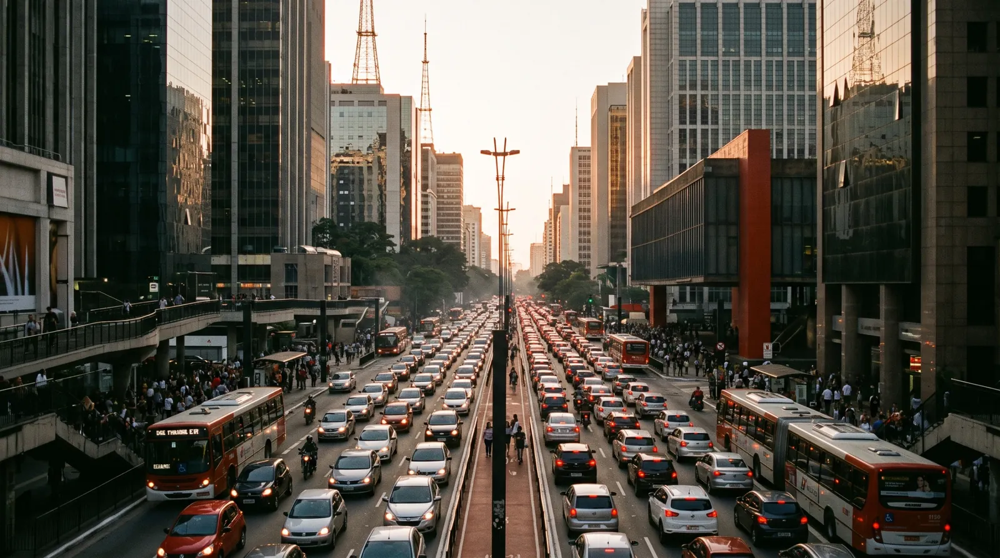

Impacto: o que muda para quem se desloca
Menos minutos perdidos em cada viagem viram horas devolvidas ao longo do ano.
Horas por ano, corredor por corredor
Considera uma pessoa que faz 2 viagens por dia, 5 dias por semana, durante 48 semanas. Cada barra mostra as horas perdidas hoje e com o SmartFlow.
Dados ilustrativos. Os atrasos e as reduções são valores de demonstração do protótipo. Você pode comparar os mesmos números em tabela no Simulador.
Mapa de calor dos corredores
Atraso por viagem: menos de 8 min 8 a 10 10 a 12 12 a 14 14 a 16 16 min ou mais
Dados ilustrativos. A cor mostra o atraso de demonstração do protótipo, não uma medição da CET. Cada quadrado traz o número escrito, então a cor nunca é a única informação.
O benefício para o cidadão
O paulistano gasta em média 2h25 por dia em deslocamentos, e quem usa transporte coletivo gasta 2h47. Qualquer minuto devolvido por viagem se repete todos os dias úteis do ano.
Além do tempo, o cidadão ganha previsibilidade, porque o trânsito passa a ter um canal para ser ouvido e um resultado que ele pode acompanhar.
Fonte: Rede Nossa São Paulo, Viver em SP 2024: Mobilidade Urbana (Ipec), em reportagem do ABC do ABC (abre em nova aba).
ODS atendidos
-
ODS 11
Cidades e comunidades sustentáveis. Contribui com a meta de transporte seguro, acessível e sustentável, ao reduzir o tempo perdido nas vias.
-
ODS 13
Ação contra a mudança global do clima. Veículos parados por menos tempo emitem menos em marcha lenta.
Quem sente a diferença

Ônibus perdem tempo nos mesmos cruzamentos que os carros. 
Cada minuto a menos por viagem se repete todos os dias úteis.
Como o impacto será medido
| Indicador | Como medir | Quem mede |
|---|---|---|
| Atraso por viagem | Comparar o tempo de viagem no pico, antes e depois do ajuste, no mesmo corredor. | Equipe e CET |
| Espera nos semáforos | Contar o tempo médio de espera nos cruzamentos do piloto. | CET |
| Reportes atendidos | Percentual de reportes que viraram um ajuste ou receberam resposta. | Prefeitura |
| Percepção dos usuários | Pesquisa curta de três perguntas, antes e depois do piloto. | Equipe |
Como o impacto cresce
Piloto
Um corredor com muitos passageiros de ônibus, com medição antes e depois.
Expansão
Corredores da mesma região, reaproveitando o que o piloto mostrou que funciona.
Integração
Prioridade para o ônibus e painel público de resultados para toda a cidade.
Fontes e créditos
- Tempo de deslocamento em São Paulo: Rede Nossa São Paulo, pesquisa Viver em SP 2024: Mobilidade Urbana (Ipec). Consultada na reportagem do ABC do ABC (abre em nova aba).
- Objetivos de Desenvolvimento Sustentável 11 e 13: Organização das Nações Unidas (abre em nova aba).
- Os corredores, atrasos e reduções do Simulador e do Impacto são dados ilustrativos criados para este protótipo.
- Feito com HTML, CSS e JavaScript puros. Ícones e diagramas desenhados em SVG para este projeto.